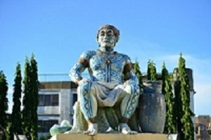
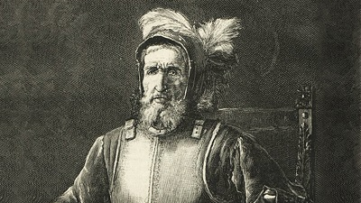
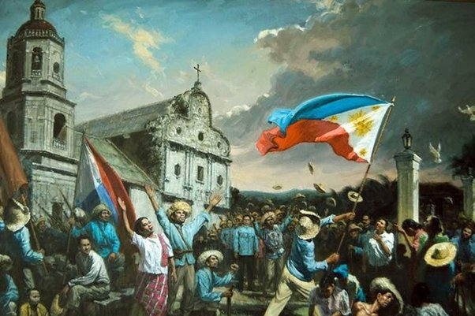
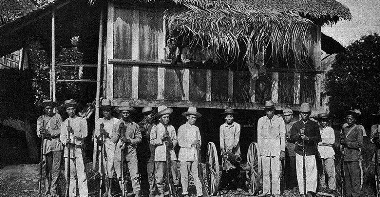
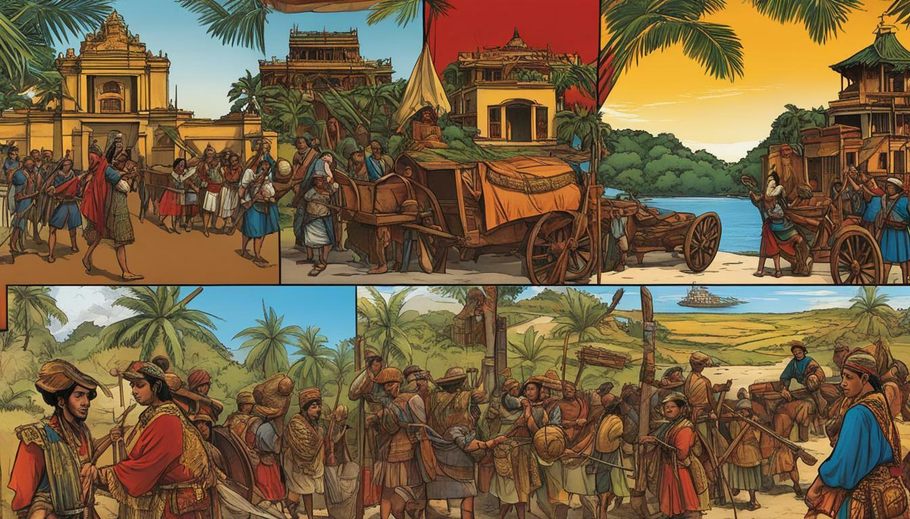
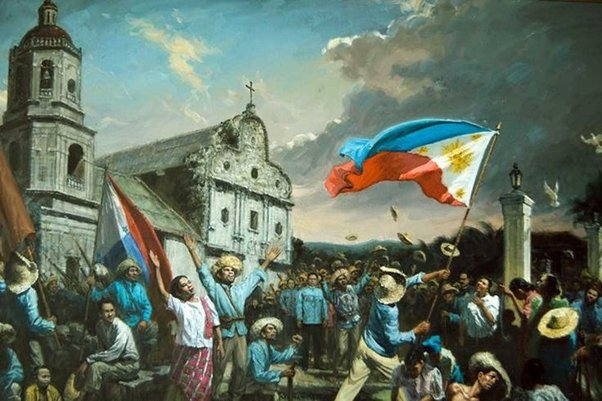
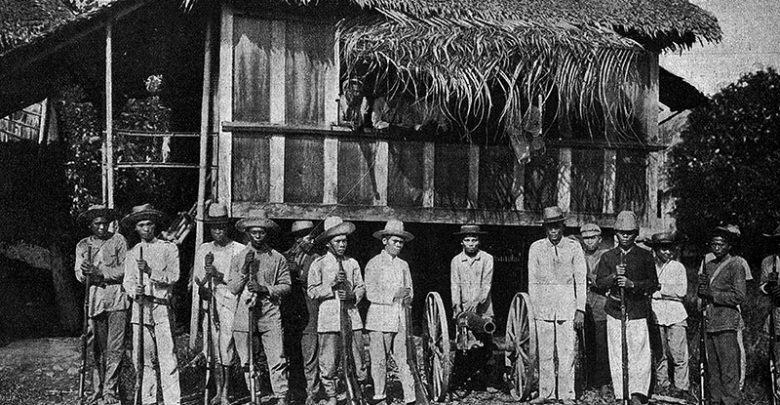
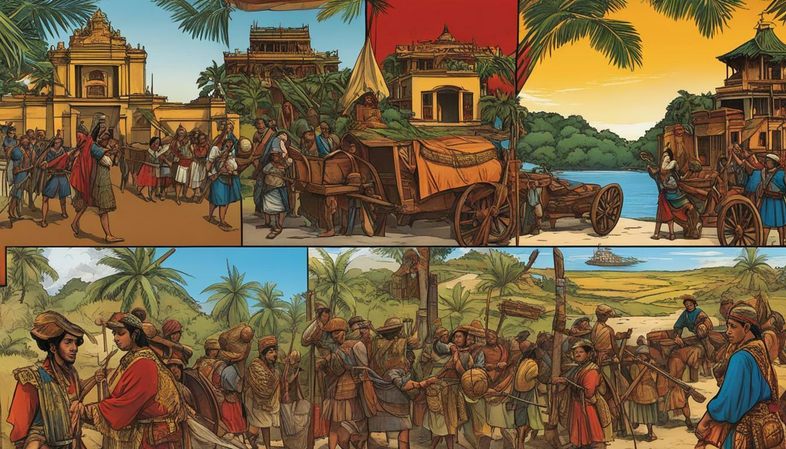
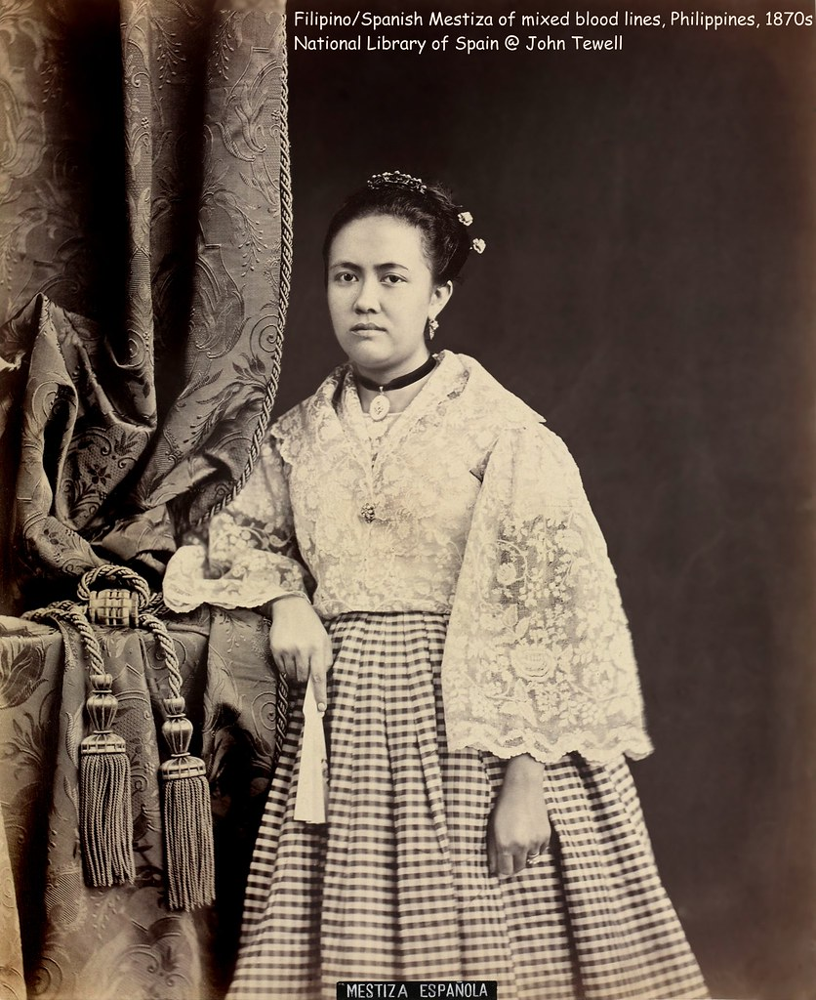
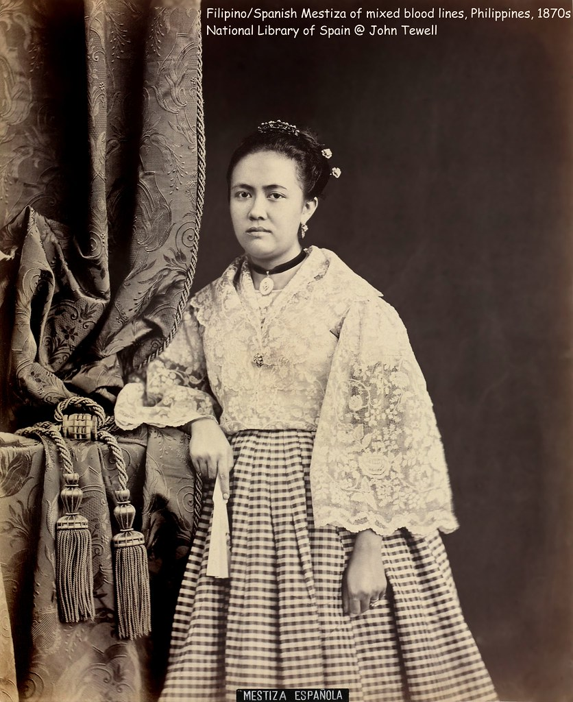

1521, Mar 16.
A Spanish expedition, sailing across the Pacific Ocean from east towest, and led by the Portuguese Ferdinand Magellan (died Apr 27, 1521) lands on
Homonhon Island east of Samar with three small ships, named the
Concepcion,Trinidad and Victoria.


1521, Mar 28.
Directing
his ships southwestward, Magellan reaches Limasawa Island,
south of Leyte. It is ruled by Rajah Kulambo, who becomes Magellan's friend.
1521, Mar 29.
Directing
To seal the friendship between Magellan and Rajah Kulambo,
they solemnize a blood compact.
This is the first recorded blood compact in Philippine history.
1521, Mar 31.
The first mass on Philippine soil is
celebrated on Limasawa or Masao in some reference book.
1521, Apr 7.
After sailing to Cebu Island, Magellan
enters a new blood compact with the local chieftain, Rajah Humabon

1521, Apr 27.
Magellan dies in a battle with Lapu-Lapu,
chieftain of Mactan, an island near Cebu.
1543, Feb 2
The leader of the most successful Spanish expedition
after Magellan, Ruy Lopez de Villalobos (died Apr 4, 1546) arrives in the archipelago.
Henames the islands the Philippines in
honor of the son of King Charles I, Philip II (1556-1598) of Spain.
Villalobos reaches Sarangani Island off the eastern coast of Mindanao
and settles there for 8 months. But because of the scarcity of food,
the expedition is forced to leave the place and sails to the Moluccas where Villalobos dies.
1565, Feb 13
With four ships and 380 men, Miguel Lopez de Legaspi arrives in the Philippines.

1565, May 8
The Island of Cebu is surenderred to Legaspi by its ruler King Tupas
Legaspi establishes the first permanent Spanish settlement on Cebu and becomes the first
Spanish Governor-General. By his orders, tributes are collected from all Filipino males age 19 to 60.
1568.
The Portuguese, under the command of General Gonzalo de Pereira, attack Cebu and blockade its port.
1570.
The Portuguese again attack the colony and are repulsed.
The series of attacks stems from Portugal's claim to the territory based on the provision of the Treaty of Tordisillas entered into by Spain and Portugal
on June 7, 1474, in which their respective spheres of influence, trade and conquest were defined.
The Portuguese believe that the Philippines falls within their sphere
1570, May.
Legaspi sends an expedition under the leadership of Martin de Goiti to Manila.
Manila is ruled by Rajah Suliman, whose friendship is won by de Goiti.
1571, Jun 24.
Legaspi establishes his government in Manila and proclaims it
the capital of the Philippines, calling it the "distinguished and ever loyal city"
 





 
